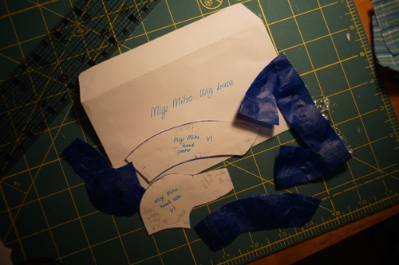
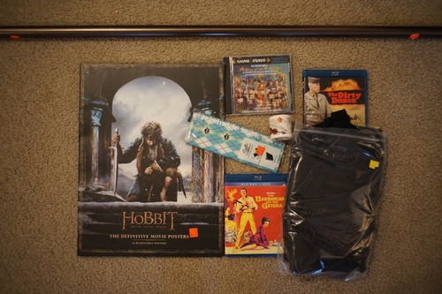

Online FCS is up! My order this time is a PS White SD-F-59 on the SD-B-03 torso, SD-H-09 hands, SD-L-02 long legs, SD-FO-02 heel feet. I'm going for a faceup this time! I'm choosing the boy type. What a cute smirk! I'm getting GE-06 in 18mm and eyelid and lip glossed too! I'm throwing in SD-H-05 as my additional hands, and no satogaeri services.*
I found some thrift store 99 cent faux fur a while back and I bought it with the hopes to try making a wig out of it. A few days ago I strapped some paper towels to Cheby's head to make a pattern. It wasn't great so I used the good old classic plastic wrap and painter's tape method to make a pattern.
I cut out the pieces, messed up twice (thrice) forgetting seam allowance, but I got all the pieces put together! And it looked like crap! The first photo is how it fits on the head naturally, the second is the best I can get it to look.
The netting of the fur is very stiff and makes the wig stand up from the thickness of the seam. It makes it very lumpy at every seam. It kind of floats a bit from the top of the head. Not only that, the fur is long, but thin.
I don't think I'll make a second attempt with this fur, but there's a few things I'd change to the pattern next time. I left out seam allowance on the sides of the wig. It's defintely better to have the front and back a little longer rather than shorter. If you want to hem the sides of the wig, you'd have to include it anyway, and possibly make it even longer. The "sideburn" areas are a little short. I'm very picky about my wigs covering the area in front of the ears and I thought I made it long enough, but it wasn't.
After this project, I have successfully attempted making eyes, wigs, and shoes. Does that cover everything??
A weird listing popped up on ebay the other day and I can't get my mind off it. It's a doll sized outfit replica of an outfit in Alphaville's The Jet Set. What a strange item to even exist. I'm so intrigued!!
Ryan really wants me to use it instead of my fold out drying rack. okie
Not mine. Cannot rate.
It's got skulls and argyle. Just Ryan's style!
Could anything good come of this?!
Ryan's
I would have been pissed if I bought this and wasn't using it for dolls. A huge pattern has already been cut out of it! Thankfully I don't need large pieces.
I've been listening to the mass of CDs I bought! I got to ABC - Absolutely and it was such a good jam! Too good! So I googled it, and of course, it was a greatest hits. I guess I'll just have to keep them in mind while searching. Level 42 - Running in the Family is really good too! I was looking for the album with Something About You, but I'm glad I found this one.
One Direction... isn't great. I wasn't really impressed. I also was not particularly impressed with Backstreet Boys (1997) either. I really appreciate Millennium now!
*I didn't order this doll and I am frustrated I cannot order heel feet any other way.